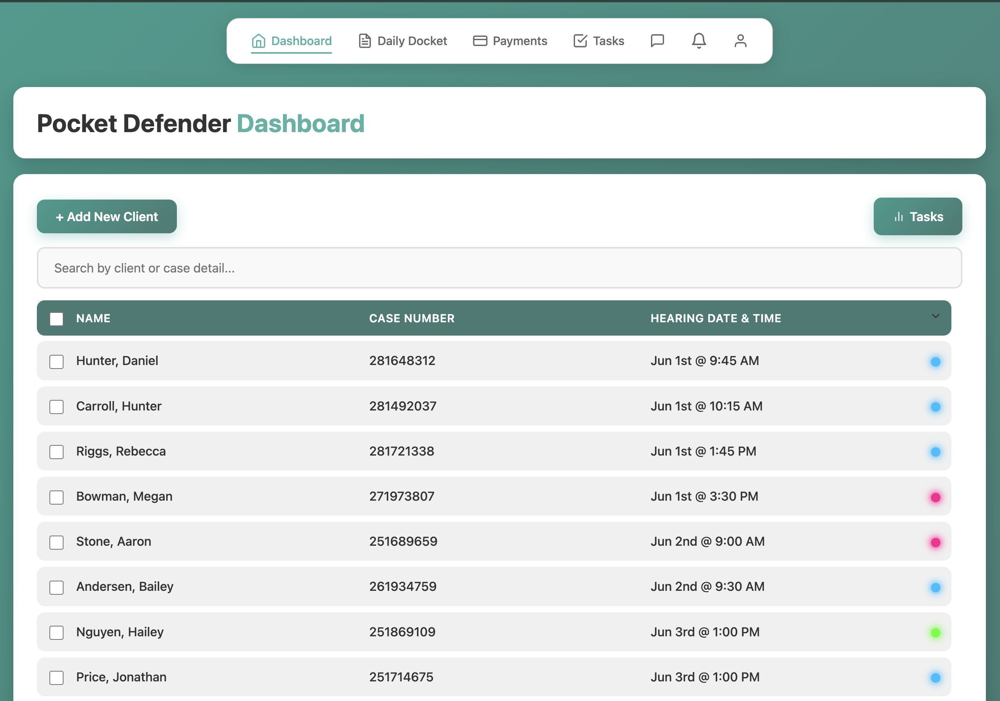
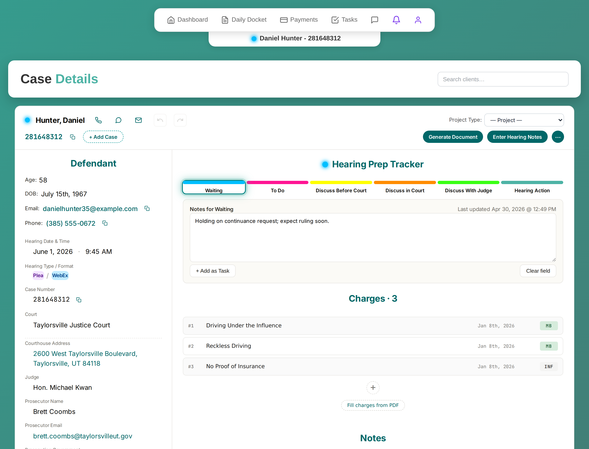
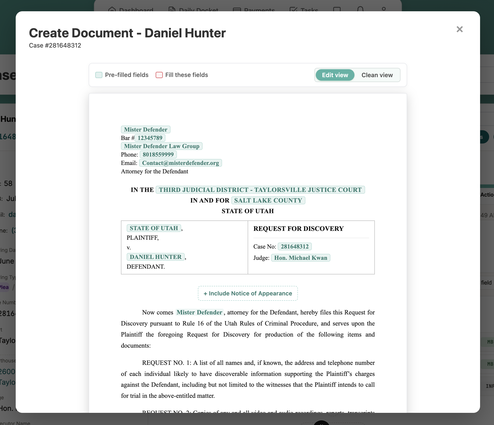
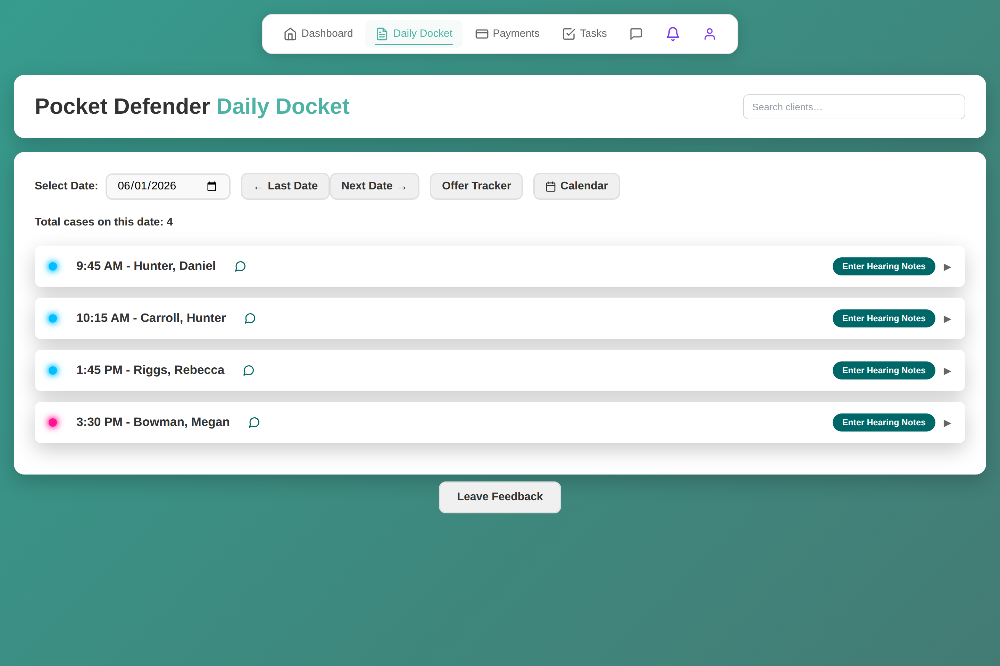
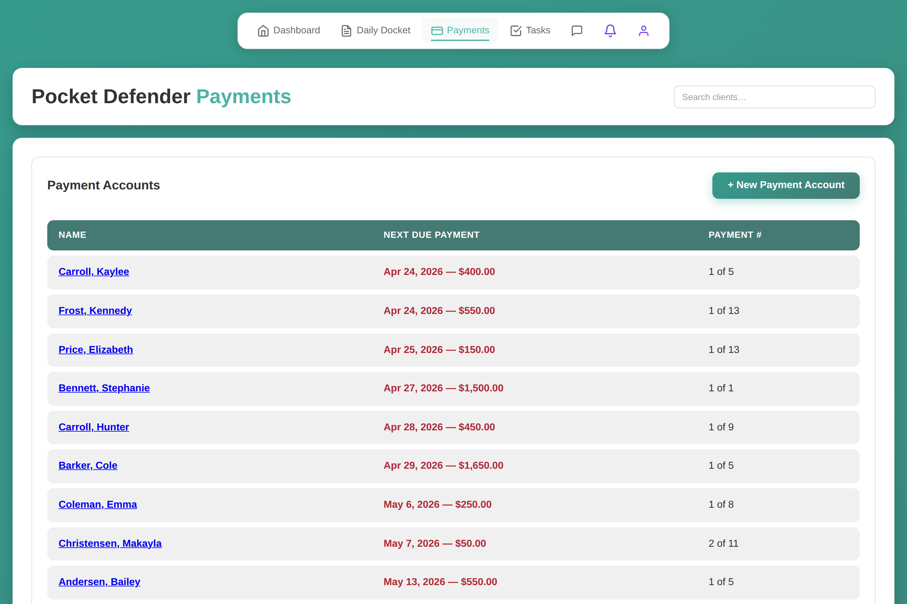
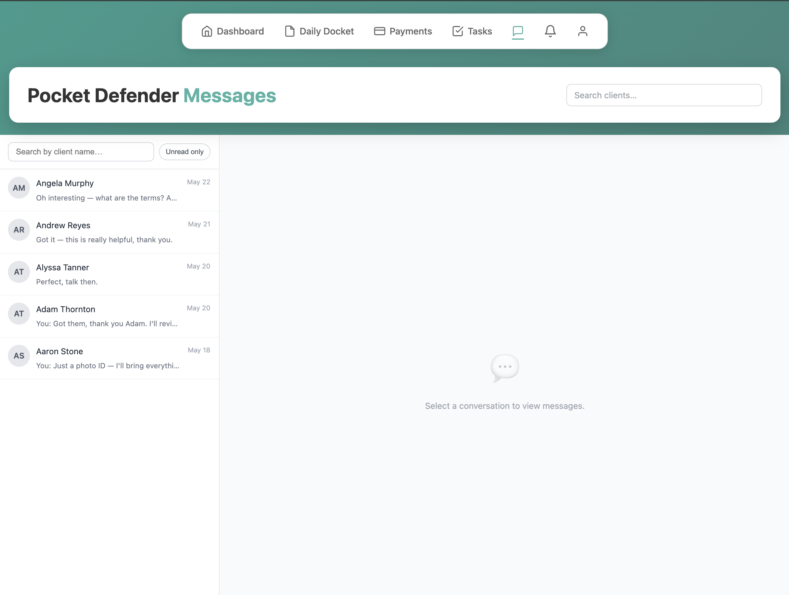

A LitFlow product · Flagship
Pocket Defender
"Your defense practice in your pocket — and on your computer." A comprehensive, AI-powered case & client management platform built specifically for criminal defense attorneys. I designed, built, and run it as founder — and use it daily in my own criminal-defense practice, so every feature earns its place against a real caseload.
- Caseload at a glance — a live dashboard of every client, case number, and hearing, with color-coded status so nothing slips before a court date.
- Daily Docket — work each hearing from one screen: charges, defendant details, plea-offer tracking, AI discovery summaries, and case notes side by side.
- AI document generation — draft court-ready filings like a Request for Discovery with case facts auto-filled from the file, then review in a clean preview before it's final.
- AI extraction & agent access — pull client info and summarize discovery from documents, screenshots, and text, and connect Claude (or any model) to act directly on your cases.
- Built to run a firm — secure client portal, two-way client messaging, automated tasks, staff accounts, Google Calendar & Drive sync, payment tracking, and firm-wide reporting.
Claude AI
Supabase
PWA
GitHub
Stripe-ready
Live and in daily use — currently serving Utah criminal defense attorneys, with a law-firm rollout underway and nationwide expansion planned.